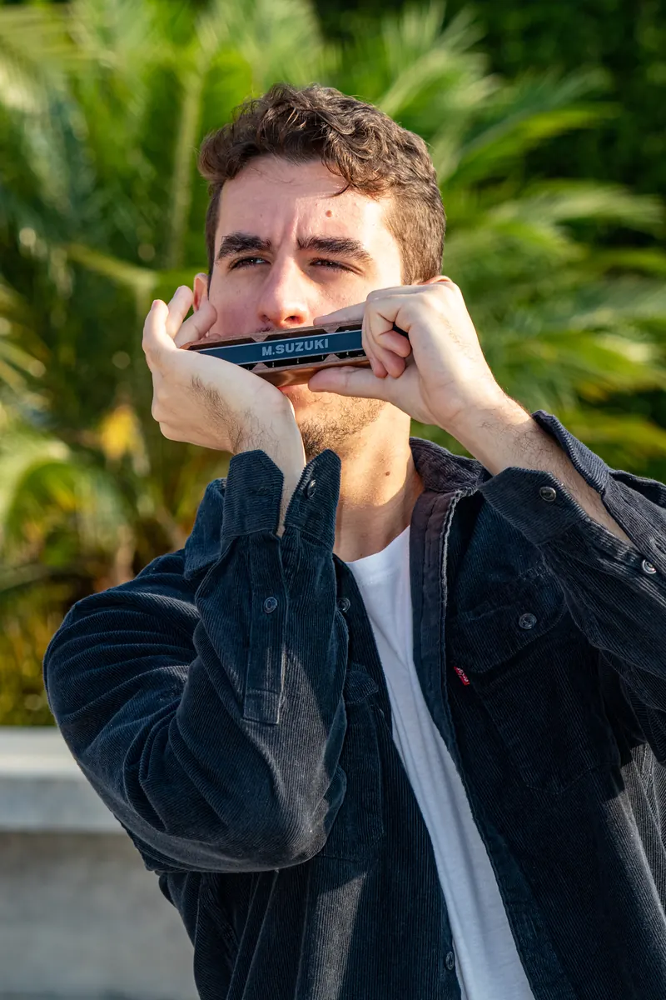
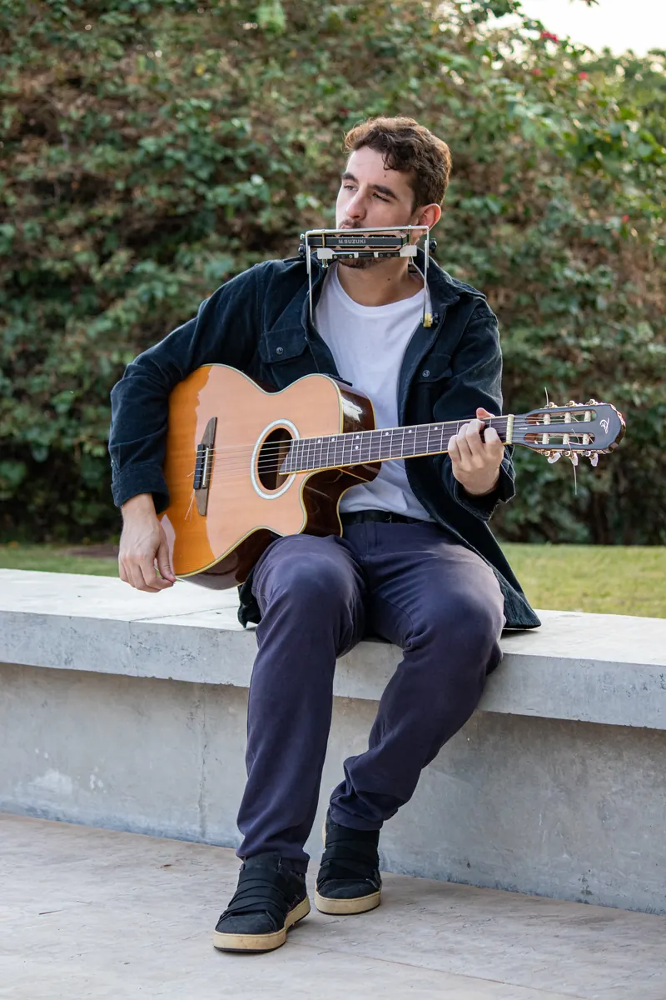
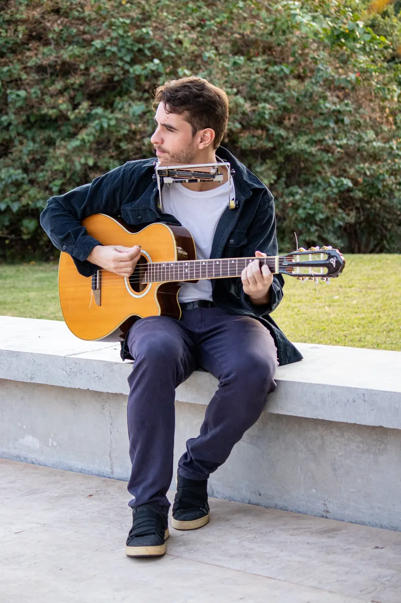
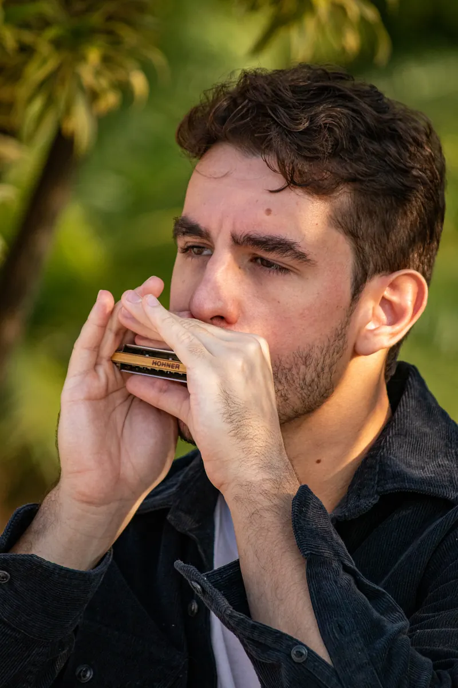
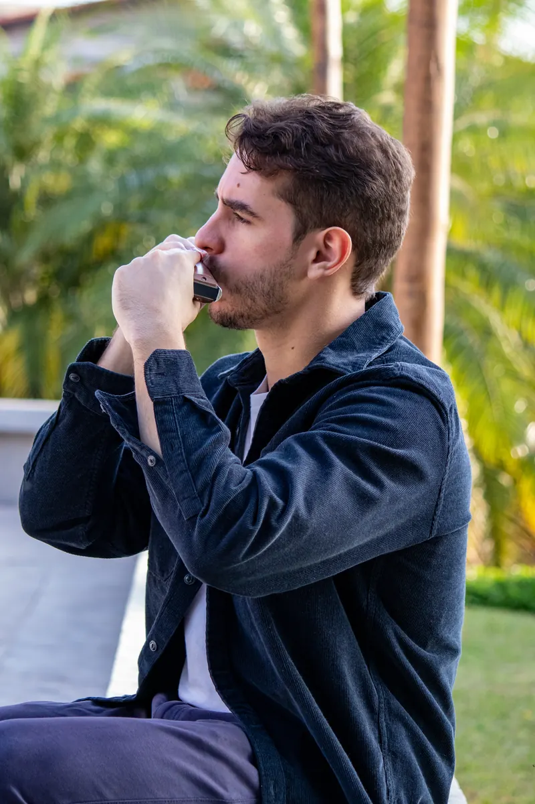
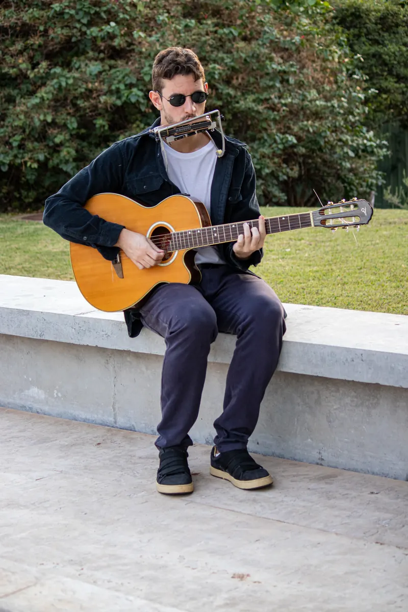
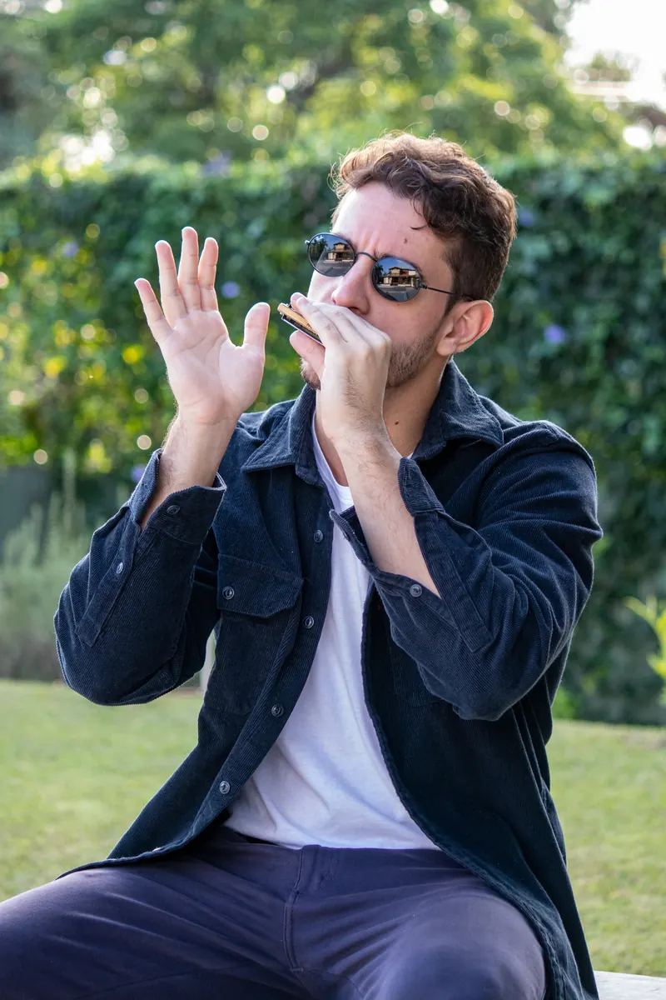

Online
Aulas particulares
Para começar do zero ou destravar o que você já toca. Aula online, ao vivo, de onde você estiver.
- Do zero ou pra quem já toca
- Gaita diatônica e cromática
- No seu ritmo, com o repertório que você curte
Gaitista de rock · Brasília, DF
Aulas online, gravações a distância, shows e eventos particulares. Gaita com a energia do rock.
Serviços
Escolhe o que você precisa e chama no WhatsApp. A conversa já começa com o assunto certo.
Online
Para começar do zero ou destravar o que você já toca. Aula online, ao vivo, de onde você estiver.

Online
Gaita na sua música: solos, bases e arranjos gravados a distância. Você manda a guia, recebe os takes.

Ao vivo
Repertório de rock e blues para bares, festivais e bandas que querem gaita no palco.

Ao vivo
Música ao vivo com gaita para casamentos, aniversários e eventos corporativos.
Sobre
Eduardo Leopoldino é gaitista com foco em rock, de Brasília, DF. Toca gaita diatônica e cromática, dá aulas, grava para outros artistas e leva a gaita para palcos e eventos.
As aulas e as gravações acontecem online, para qualquer cidade. Shows e eventos, ao vivo.
Galeria




O bis
Chama no WhatsApp e conta o que você precisa: aula, gravação, show ou evento.
Chamar no WhatsAppAulas e gravações online · Shows e eventos ao vivo · Brasília, DF